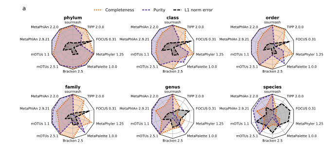

Luiz Irber 0000-0003-4371-9659
· luizirber
· luizirber
Graduate Group in Computer Science, UC Davis; Department of Population Health and Reproduction, UC Davis
· Funded by Grant XXXXXXXX
C. Titus Brown 0000-0001-6001-2677
· ctb
Department of Population Health and Reproduction, UC Davis
Abstract
The accurate assignment of genomes and taxonomy to metagenome data is
a significant challenge in microbiome studies. Here we describe
Scaled MinHash, an extension of MinHash k-mer sketching that permits
rapid and accurate compositional analysis of shotgun metagenome data
sets. We implement this approach in the sourmash software, in order to
support large-scale Jaccard containment searches across all 700,000
currently available microbial reference genomes. We then approach
shotgun metagenome compositional analysis as a min-set-cover problem,
i.e. as a problem of finding the minimal collection of reference
genomes for a metagenome. We implement a greedy approximate solution
using Scaled MinHash. Finally, we show that by linking genomes to
their taxonomy, we can provide a lightweight and precise method for
taxonomic classification of metagenome content. sourmash is available
as open source under the BSD 3-Clause license at
github.com/dib-lab/sourmash/.
Introduction
Shotgun metagenomics measures the sequence content of microbial communities.
Compositional analysis of shotgun metagenome samples addresses the
question of what reference genomes should be used for functional
and taxononomic interpretation of metagenome content.
One significant practical problem is that we now have 100s of
thousands of reference genomes, and this strains our practical
processing capacity. In turn, this prevents us from making use of all
available information in metagenome analyses.
Below, we describe a lightweight approach to compositional analysis of
shotgun metagenome samples. Our approach tackles the selection
of appropriate reference genomes and provides a lightweight method for
taxonomic classification of metagenome data.
We first define Scaled MinHash, an extension of MinHash sketching
that supports lightweight containment estimation for metagenome
datasets using k-mers. We implement Scaled MinHash in Python and
Rust, and show that it is competitive in accuracy with other
containment estimation approaches.
We next frame reference-based metagenome content analysis as a
min-set-cov problem, in which we seek the minimum number of genomes
in the reference database necessary to cover the known content of a
metagenome. We implement a best-polynomial-time greedy approximation
to the min-set-cov problem using Scaled MinHash, and show that it
recovers a minimum set of reference genomes for the mappable reads in
a metagenome.
Finally, we implement a simple taxonomic classification approach on
top of min-set-cov, in which we transfer the taxonomy of the genomes
from the set cover to the metagenome. We show that this permits
precise and lightweight classification of metagenome content across
all taxonomic levels.
Results
Scaled MinHash sketches support accurate containment operations
We define the Scaled MinHash on an input domain of \(k\)-mers, \(W\), as follows:
\[\mathbf{SCALED}_s(W) = \{\,w \leq \frac{H}{s} \mid \forall w \in
W\,\}\] where \(H\) is the largest possible value in the domain of
\(h(x)\) and \(\frac{H}{s}\) is the value in the
Scaled MinHash.
The Scaled MinHash is a mix of MinHash and ModHash
[1]. It keeps the selection of the
smallest elements from MinHash, while using the dynamic size from
ModHash to allow containment estimation. However, instead of taking
\(0 \mod m\) elements like \(\mathbf{MOD}_m(W)\), a Scaled MinHash uses a
parameter \(s\) to select a subset of \(W\).
Scaled MinHash supports containment estimation with high accuracy and
low bias. (Analytic work from David HERE.)
approximation formula (eqn 13 from overleaf)
for queries into large sets (large \(|A|\)), bias factor is low.
refer to appendix for derivation.
Given a uniform hash function \(h\) and \(s=m\), the cardinalities of
\(\mathbf{SCALED}_s(W)\) and \(\mathbf{MOD}_m(W)\) converge for large
\(\vert W \vert\). The main difference is the range of possible values
in the hash space, since the Scaled MinHash range is contiguous and
the ModHash range is not. This permits a variety of convenient
operations on the sketches, including iterative downsampling of Scaled
MinHash sketches as well as conversion to MinHash sketches.
Scaled MinHash accurately estimates containment between sets of different sizes
We compare the Scaled MinHash method to
CMash (Containment MinHash) and Mash Screen (Containment Score)
for containment queries in the Shakya dataset
[2], a synthetic mock metagenomic
bacterial and archaeal community where the reference genomes are
largely known. This data set has been used in several methods evaluations
[???]]. (CTB add SPADes etc refs.)
Figure 1:Letter-value plot [???] of the
differences from containment estimate to ground truth (exact).
Each method is evaluated for \(k=\{21,31,51\}\),
except for Mash with \(k=51\), which is unsupported.
A: Using all 68 reference genomes found in previous articles.
B: Excluding low coverage genomes identified in previous articles.
All methods are within 1% of the exact containment on average (Figure
1 A), with CMash consistently underestimating
the containment for large \(k\) and overestimating for small \(k\). Mash Screen with \(n=10000\) has the smallest difference to ground truth for
\(k=\{21, 31\}\), followed by smol with scaled=1000 and Mash Screen with \(n=1000\).
Figure 1 B shows results with low-coverage and
contaminant genomes (as described in [???] and
[???]) removed from the database. The number of outliers
is greatly reduced, with most methods within 1% absolute difference
to the ground truth. CMash still has some outliers with up to 8%
difference to the ground truth.
CTB questions:
should we just use (B) benchmark?
should we add sketch sizes in here more explicitly? e.g. number of hashes kept?
compares well with others
How much is missed figure; Poisson calculations? => appendix?
Metagenome sketches can be accurately decomposed into constituent genomes by a greedy algorithm, ‘gather’
We next ask: what is the smallest collection of genomes in a database
that should be used as a reference for a metagenome?
Using k-mers, this question can be framed as follows: for a given
metagenome \(M\) and a reference database \(D\), what is the minimal
collection of genomes in \(D\) which contain all of the k-mers in the
intersection of \(D\) and \(M\)? That is, find the smallest set \(\{ G_n \}\) of genomes in \(D\) such that \[k(M) \cap k(D) = \bigcup_n \{ k(M)
\cap k(G_n) \} \]
This is equivalent to the minimal set covering problem, for which
there is a polynomial-time approximation (cite).
For very large databases such as GenBank (which contains over 700,000
microbial genomes as of January 2021), doing this for full genomes is
expensive. Because the algorithm above depends on containment
operations, we can implement an approximation using Scaled MinHash
sketches.
The results on two metagenomes, podar (used above) and p88mo11, an
IBD data set, are shown in figure XXX.
compare conceptually vs LCA approaches; combinatorial. do we want to
do a benchmark of some kind wrt LCA saturation?
We evaluated gathers performance on the Shakya data as used above,
against GenBank, and compared the genome containment estimation with
read mapping.
CTB: do we want to do this with all k-mers, not just scaled minhash?
K-mer foo approximates mappability
(this could be before, or after taxonomic validation?)
K-mers have been widely used to approximate mapping. …
We implement a mapping version of gather, in which we map all metagenome reads
to all the genomes identified by gather, and then iteratively subtract the
reads that mapped to the gather results in the order specified by gather
and remap them. This lets us compare gather results to mapping results.
Figure 2 shows that mapping results do approximate gather results.
However, they do so better for synthetic communities than for real
communities, especially as gather rank increases. This is because in
synthetic communities the reference genomes are closer to the actual
content of the metagenome, while in real metagenomes we are mapping to
imperfect references.
In particular, both the remnant k-mer and the remnant mappings decrease
substantially with increased gather rank.
This is because at the higher ranks we
are not mapping to all elements in the genome; e.g. in figure XXX, we
see that there is a substantial difference in the total number of
bases mapped vs the leftover reads from iterative removal. Here only
reads that did not map to higher ranked genomes are mapping.
Inspection of the genome taxonomy show that in these situations, we
are mapping to subsets of genomes that are the same species or genus
as earlier ranked genomes. Figure XYZ compares the best-ranked
hash count to the aggregate hash count for the species pangenome; for
many species, the aggregate hashes identified for each
species in total far outweighs the hashes identified for any one
genome.
(belongs in discussion)
This suggests that metagenome reads are being mapped to different
genomic elements from a species pangenome. While we do not have the
resolution to determine this, the most parsimonious interpretation
is that the “true” reference genome for the species present in the
sample is not in the database, and instead is being cobbled together
from core and accessory genome elements in the database.
(Maybe this is where we use R. gnavus genomes? Yes - take JUST reads
that map to R. gnavus, do gather, show what happens x all gnavus
genomes? Could also do withholding, to show that pangenome elements will
usually map one way or another.)
(Show plots with leftover mapping vs all mapping.)
(maybe use sgc here? if so, this would be the last section!)
(CTB: revisit CMash/mash screen papers here to see how
they evaluated. Also, maybe mention sgc gbio paper and recovery of new
genome.)
Figure 2:Hash-based decomposition of a metagenome into constituent
genomes compares well to bases covered by read mapping.
The reference genomes are rank ordered along the x axis based on the largest number of hashes from the metagenome specific to that genome, i.e. by order in gather output; hence the number of hashes classified for each genome (orange dots) is monotonically decreasing.
The y axis shows absolute number of estimated k-mers classified to this genome (orange) or total number of bases covered in the reference (blue); the numbers have not been rescaled.
Decreases in mapping (green peaks) occur for genomes which are not
exact matches to the genomes of the organisms used to build the mock
community (cite sherine, mash screen).
Taxonomic profiling based on ‘gather’ is accurate
CAMI results
suggests gather/greedy decomposition is pretty good
We implement a lightweight taxonomic profiling method on top of gather
by directly transferring the taxonomies for the discovered genomes into
the profile. Lineages can then be summarized at each taxonomic rank.
To evaluate the performance of taxonomic profiling, we used the mouse
gut metagenome dataset [???] from the Critical
Assessment of Metagenome Intepretation (CAMI)
[???], a community-driven initiative for
reproducibly benchmarking metagenomic methods.
The simulated
mouse gut metagenome (MGM) was derived from 791 bacterial and
archaeal genomes,
representing 8 phyla,
18 classes,
26 orders,
50 families,
157 genera,
and 549 species.
64 samples were generated with CAMISIM,
with 91.8 genomes present on each sample on average.
Each sample is 5 GB in size, and both short-read (Illumina) and
long-read (PacBio) sequencing data is available.
Figure 3: Comparison per taxonomic rank of methods in terms of completeness, purity (1% filtered), and L1 norm.
Figure 4: Performance per method at all major taxonomic ranks, with the shaded bands showing the standard deviation of a metric. In a and b, completeness, purity, and L1 norm error range between 0 and 1. The L1 norm error is normalized to this range and is also known as Bray-Curtis distance. The higher the completeness and purity, and the lower the L1 norm, the better the profiling performance.
Figure 5: Methods rankings and scores obtained for the different metrics over all samples and taxonomic ranks. For score calculation, all metrics were weighted equally.
Figure 3, 4, 5 is an updated version of Figure 6 from [???] including sourmash,
comparing 10 different methods for taxonomic profiling and their characteristics at each taxonomic rank.
While previous methods show reduced completeness,
the ratio of taxa correctly identified in the ground truth,
below the genus level,
sourmash can reach 88.7% completeness at the species level with the highest
purity (the ratio of correctly predicted taxa over all predicted taxa) across
all methods:
95.9% when filtering predictions below 1% abundance,
and 97% for unfiltered results.
sourmash also has the lowest L1-norm error
(the sum of the absolute difference between the true and predicted abundances at
a specific taxonomic rank),
the highest number of true positives and the lowest number of false positives.
Table 1: Updated Supplementary Table 12 from [???].
Elapsed (wall clock) time (h:mm) and maximum resident set size
(kbytes) of taxonomic profiling methods on the 64 short read samples
of the CAMI II mouse gut data set. The best results are shown in
bold. Bracken requires to run Kraken, hence the times required to run
Bracken and both tools are shown. The taxonomic profilers were run on
a computer with an Intel Xeon E5-4650 v4 CPU (virtualized to 16 CPU
cores, 1 thread per core) and 512 GB (536.870.912 kbytes) of main
memory.
Taxonomic binner
Time (hh:mm)
Memory (kbytes)
MetaPhlAn 2.9.21
18:44
5,139,172
MetaPhlAn 2.2.0
12:30
1,741,304
Bracken 2.5 (only Bracken)
0:01
24,472
Bracken 2.5 (Kraken and Bracken)
3:03
39,439,796
FOCUS 0.31
13:27
5,236,199
CAMIARKQuikr 1.0.0
16:19
27,391,555
mOTUs 1.1
19:50
1,251,296
mOTUs 2.5.1
14:29
3,922,448
MetaPalette 1.0.0
76:49
27,297,132
TIPP 2.0.0
151:01
70,789,939
MetaPhyler 1.25
119:30
2,684,720
sourmash 3.4.0
16:41
5,760,922
When considering resource consumption and running times, sourmash
used 5.62 GB of memory with an LCA index built from the RefSeq
snapshot (141,677 genomes) with \(scaled=10000\) and \(k=51\). Each
sample took 597 seconds to run (on average), totalling 10 hours and 37
minutes for 64 samples. MetaPhlan 2.9.21 was also executed in the
same machine, a workstation with an AMD Ryzen 9 3900X 12-Core CPU
running at 3.80 GHz, 64 GB DDR4 2133 MHz of RAM and loading data from
an NVMe SSD, in order to compare to previously reported times in Table
1. MetaPhlan took 11 hours and
25 minutes to run for all samples, compared to 18 hours and 44 minutes
previously reported, and correcting the sourmash running time by
this factor it would likely take 16 hours and 41 minutes in the
machine used in the original comparison. After correction, sourmash
has similar runtime and memory consumption to the other best
performing tools (mOTUs and MetaPhlAn), both gene marker and
alignment based tools.
Additional points are that sourmash is a single-threaded program, so
it didn’t benefit from the 16 available CPU cores, and it is the only
tool that could use the full RefSeq snapshot, while the other tools
can only scale to a smaller fraction of it (or need custom databases).
The CAMI II RefSeq snapshot for reference genomes also doesn’t include
viruses; this benefits sourmash because viral Scaled MinHash
sketches are usually not well supported for containment estimation,
since viral sequences require small scaled values to have enough
hashes to be reliable.
Notes:
private database, private taxonomies are easily supported without reindexing.
Discussion
Scaled MinHash provides efficient compositional queries for large data sets.
Scaled MinHash is an implementation of ModHash using concepts from
MinHashing. Scaled MinHash sketches support a variety of features
that are convenient for compositional queries, including containment,
hash removal, abundance tracking, and downsampling of sketches to
lower scaled values. (CTB: mention streaming, hash occurrence guarantees?) In
exchange, Scaled MinHash sketches have limited sensitivity for small
queries and are only bounded in size by H/s, which is usually quite
large.
Once a Scaled MinHash is calculated, the original data does not need
to be revisited during searches. This allows sketches to serve as a
distributable compressed index for sequence content. Moreover, because
these sketches are collections of hashes, existing k-mer indexing
approaches can be applied to the sketches to provide fast database
search.
In exchange for these many conveniences, Scaled MinHash sketches have
limited sensitivity on small data sets. (More here.)
Scaled MinHash sketches offer a fixed range of possible hash values,
but with reduced sensitivity for small datasets when using larger \(s\)
(scaled) values. A biological example are viruses: at \(s=2000\) many
viruses are too small to consistently have a hashed value selected by
the Scaled MinHash approach. Other MinHash approaches sidestep
the problem by using hashing and streaming the query dataset (Mash Screen) or loading the query dataset into an approximate query
membership data structure (CMash) to allow comparisons with the
variable range of possible hash values, but both solutions require the
original data or a more limited data representation than Scaled
MinHash. The consistency of operating in the same data structure
also allows further methods to be develop using only Scaled MinHash
sketches and their features, especially if large collections of
Scaled MinHash sketches are available.
Another drawback of Scaled MinHash when compared to regular MinHash sketches
is the size: the MinHash parameter \(s\) sets an upper bound on the size
of the sketch, independently of the size of the original data. Scaled
MinHash sketches grow proportionally to the original data cardinality,
and in the worst case can have up to \(\frac{H}{s}\) items.
Intuitively, Scaled MinHash is performing a density sampling at a rate
of 1 \(k\)-mer per \(s\) k-mers seen.
Others have also applied the ModHash concept to genomic data; see, for
example, Durbin’s “modimizer”
[3].
Scaled MinHash sketches support many convenient operations.
Scaled MinHash supports many convenient operations that minimize
the need to reprocess the original data, which can be important for
genomics applications.
Because Scaled MinHash sketches collect any value below a threshold
this also guarantees that once a value is selected it is never
discarded. This is useful in streaming contexts: any operations that
used a previously selected value can be cached and updated with new
arriving values. \(\mathbf{MOD}_m(W)\) has similar properties, but this
is not the case for \(\mathbf{MIN}_n(W)\), since after \(n\) values are
selected any displacement caused by new data can invalidate previous
calculations.
Scaled MinHash also directly supports the addition and subtraction of
hash values from a sketch, allowing post-processing and filtering.
Although possible for \(\mathbf{MIN}_n(W)\), in practice this requires
oversampling (using a larger \(n\)) to account for possibly having less
than \(n\) values after filtering (the approach taken by Finch
[???]).
Another useful operation is downsampling: the contiguous
value range for Scaled MinHash sketches allow deriving
\(\mathbf{SCALED}_{s'}(W)\) sketches for any \(s' \ge s\) using only
\(\mathbf{SCALED}_{s}(W)\). MinHash and ModHash can also support this
operation, as long as \(n' \le n\) and \(m'\) is a multiple of \(m\).
Note also that Scaled MinHash and regular MinHash can be converted
between each other in certain situations.
Abundance filtering is another extension to MinHash sketches, keeping
a count of how many times a value appeared in the original data. This
allows filtering for low-abundance values, as implemented in Finch
[???], another MinHash sketching software for genomics.
Filtering values that only appeared once was implemented before in
Mash by using a Bloom Filter and only adding values after they were
seen once, with later versions also implementing an extra counter
array to keep track of counts for each value in the MinHash. These
operations can be done in Scaled MinHash without auxiliary data
structures.
min-set-cov supports accurate compositional analysis of metagenomes.
Many metagenome content analysis approaches use reference genomes to
interpret metagenome content. Here, we frame the computational
challenge of discovering the appropriate reference genomes for a set
of metagenome reads as a min-set-cov problem, in which we seek the
minimum set of reference genomes necessary to account for all
mappable reads. We show that this can be resolved efficiently for
real-world data sets using a greedy algorithm together with Scaled
MinHash and large-scale containment search of GenBank.
Our comparison of hash-based estimation of containment to mapping
results in Figure 2 shows that this approach is an accurate
proxy for systematic mapping. In particular, hash-based estimation of
containment closely matches actual read mapping performance.
One confounding factor is that for real metagenomes, exact reference
strains are not usually present in the database. This manifests in two
ways in Figure ??. First, there is a systematic mismatch
between the hash content and the mapping content (green line), because
mapping software is more permissive in the face of small variants than
k-mer-based exact matching. Moreover, many of the lower rank genomes
in the plot are from the same species but different strains as the
higher ranked genomes, suggesting that strain-specific portions of the
reference are being utilized for matching at lower ranks. In reality,
there will usually be a different mixture of strains in the metagenome
than in the reference database. Approaches such as spacegraphcats may
help resolve this by building new references, yada.
Note: gather can also be applied to private databases.
Leftover text:
Our implementation of gather does not currently select the set of
smallest genomes, but rather the smallest set of genomes. If there are
two genomes with equal containment of the k-mers, it is arbitrary as
to which one is chosen.
Note that here we are providing one approach / approximation (Scaled
MinHash containment) with one shingling approach (k-mers) to tackle
metagenome composition for mapping and taxonomy. The min-set-cover
approach could be used with exact containment, and/or with other
shingling approaches.
xx can we guess at places where gather would break? One is equivalent
containment/different genome sizes.
Any data structure supporting both the containment\(C(A, B) = \frac{\vert A \cap B \vert }{\vert A \vert}\) and remove elements
operations can be used as a query with gather. For example, a set
of the \(k\)-mer composition of the query supports element removal, and
calculating containment can be done with regular set operations.
Approximate membership query (AMQ) sketches like the Counting
Quotient Filter[???] can also be used, with
the benefit of reduced storage and memory usage. Moreover, the
collection of datasets can be implemented with any data structure that
can do containment comparisons with the query data structure. Here it
can be important to have performant containment searches, since
gather may run FindBestContainment many times.
min-set-cov supports accurate taxonomic classification of metagenome content
Once the min-set-cov approach has identified reference genomes, we can
build a taxonomic classifier for metagenome content by simply
reporting the taxonomies of the constitutent genomes. Our initial
taxonomic benchmarking show that this approach is competitive for all
metrics across all taxonomic levels.
This approach does not result in the taxonomic saturation caused by
the increasing size of large reference databases associated with many
other k-mer based methods (Kraken, etc.). As long as every genome in
the database possesses a distinct combination of k-mers, the
min-set-cov approach can disambiguate reference genomes based on this
combination. In practice, our use of Scaled MinHash k-mer/hash
sampling will limit the resolution of our technique for very closely
related genomes, because distinct hashes will not be chosen for them.
One convenient feature of this approach to taxonomic analysis is that
new or changed taxonomies can be readily incorporated by assigning
them directly to genome identifiers; the majority of the compute is
involved in finding the reference genomes, which can have assignments
in different taxonomic frameworks. For example, sourmash already
supports GTDB natively, and will also support the emerging LINS
framework. sourmash can also readily incorporate updates to
taxonomies, e.g. frequent updates to the NCBI taxonomy, without
requiring expensive reanalysis of the primary metagenome data or even
redoing the min-set-cov computation.
Finally, as with the underlying min-set-cov algorithm, it is
straightforward to support taxonomic analysis using custom databases
and/or custom taxonomic assignments; sourmash already supports this
natively.
Algorithm is simple, computational performance is great
The algorithms underlying both Scaled MinHash and the greedy
min-set-cov solution are simple to describe and straightforward to
implement. This increases the likelihood of correct implementation,
provides opportunities for independent optimization of data structures,
and simplifies interoperability between different implementations.
We provide two implementations with this paper: sourmash, a fully
supported open source implementation with command-line, Python and
Rust APIs; and smol, a much shorter Rust implementation for
demonstration purposes.
sourmash supports large scale data analysis
Taxonomic profiling is fundamentally limited by the availability of
reference datasets, even if new reference datasets can be derived from
clustering possible organisms based on sequence data in metagenomes
[???]. The sourmash project provides large scale
databases for NCBI and GTDB taxonomies, and supports search of all
available genomes.
Limitations of gather
(For Scaled MinHash, gather, and taxonomy. Move where? Conclusions?)
gather as implemented in sourmash has the same limitations as
Scaled MinHash sketches, including reduced sensitivity to small
genomes/sequences such as viruses. Scaled MinHash sketches don’t
preserve information about individual sequences, and short sequences
using large scaled values have increasingly smaller chances of having
any of its \(k\)-mers (represented as hashes) contained in the sketch.
Because it favors the best containment, larger genomes are also more
likely to be chosen first due to their sketches have more elements,
and further improvements can take the size of the match in
consideration too. Note that this is not necessarily the similarity\(J(A, B)\) (which takes the size of both \(A\) and \(B\)), but a different
calculation that normalizes the containment considering the size of
the match.
gather is also a greedy algorithm, choosing the best containment
match at each step. Situations where multiple matches are equally
well contained or many datasets are very similar to each other can
complicate this approach, and additional steps must be taken to
disambiguate matches. The availability of abundance counts for each
element in the Scaled MinHash is not well explored, since the
process of removing elements from the query doesn’t account for them
(the element is removed even if the count is much higher than the
count in the match).
Both the multiple match as well as the abundance counts issues can benefit from
existing solutions taken by other methods,
like the species score (for disambiguation) and Expectation-Maximization (for abundance analysis)
approaches from Centrifuge [???].
(From David Koslicki)
Gotchas:
Lack of sensitivity for small queries
Potentially large sketch sizes
And a couple other that I’ve tentatively/mathematically observed:
The variance of the estimate of C(A,B)=|AB| / |A| appears to
also depend on |A|, which was somewhat surprising
The “fixed k-size” problem (which might be able to be overcome with
the prefix-lookup data structure, if one sacrifices some accuracy)
Conclusion
scaled min hash is powerful, with well defined limitations.
gather is awesome and convenient.
taxonomy is awesome and overcomes limitations of many current approaches.
sourmash is robust software that provides a practically usable implementation of these ideas.
future directions…
Scaled MinHash sketches are simple to implement and analyze, with
consistent guarantees for the range of values and subsetting
properties when applied to datasets. Containment and similarity
operations between Scaled MinHash sketches avoid the need to access
the original data or more limited representations that only allow
membership query, and serve as a proxy for large scale comparisons
between hundreds or thousands of datasets.
Small genomes require low scaled values in order to properly estimate
containment and similarity, and exact \(k\)-mer matching is brittle when
considering evolutionarily-diverged organisms. While some of these
problems can be overcome in future work, Scaled MinHash sketches can
serve as a prefilter for more accurate and computationally expensive
applications, allowing these methods to be used in larger scales by
avoiding processing data that is unlikely to return usable results.
Scaled MinHash sketches are effective basic building blocks for
creating a software ecosystem that allow practical applications,
including taxonomic classification in metagenomes and large scale
indexing and searching in public genomic databases.
Methods
Implementation of Scaled MinHash
We provide two implementations of Scaled MinHash, smol and
sourmash. smol is a minimal implementation of Scaled MinHash
developed to demonstrate the method; it does not include many required
features for working with real biological data, but its smaller code
base makes it a more readable and concise example of the method.
sourmash[4] implements features and
functionality needed for large scale analyses of real data.
Comparison between CMash, mash screen, and Scaled MinHash.
Experiments use \(k=\{21, 31, 51\}\) (except for Mash, which only
supports \(k \le 32\)). For Mash and CMash they were run with
\(n=\{1000, 10000\}\) to evaluate the containment estimates when using
larger sketches with sizes comparable to the Scaled MinHash sketches
with \(scaled=1000\). The truth set is calculated using an exact
\(k\)-mer counter implemented with a HashSet data structure in the
Rust programming language [???].
For Mash Screen the ratio of hashes matched by total hashes is used
instead of the Containment Score, since the latter uses a \(k\)-mer
survival process modeled as a Poisson process first introduced in
[???] and later used in the Mash distance[???] and Containment score[???]
formulations.
MHBT
The MinHash Bloom Tree (MHBT) is a variation of the Sequence
Bloom Tree (SBT) that uses Scaled MinHash sketches as leaf nodes
instead of Bloom Filters as in the SBT. The search operation in SBTs
is defined as a breadth-first search starting at the root of the tree,
using a threshold of the original \(k\)-mers in the query to decide when
to prune the search. MHBTs use a query Scaled MinHash sketch instead,
but keep the same search approach. The threshold of a query \(Q\)
approach introduced in [???] is equivalent to the
containment \[C(Q, S) = \frac{\vert Q \cap S \vert }{\vert S \vert}\]
described in [???], where \(S\) is a Scaled MinHash
sketch. For internal nodes \(n\) (which are Bloom Filters) the
containment of the query Scaled MinHash sketch \(Q\) is
\[
C(Q, n) = \frac{\vert \{\,h \in n \mid \forall h \in Q\,\} \vert}{\vert Q
\vert}
\]
as defined by
[???] for the Containment MinHash to Bloom
Filter comparison.
MHBTs support both containment and similarity queries.
For internal nodes the containment \(C(Q,n)\) is used as an upper-bound of the similarity \(J(Q, n)\):
\[C(Q, n) &\ge J(Q, n) \\
\frac{\vert Q \cap n \vert }{\vert Q \vert} \ge \frac{\vert Q \cap n \vert }{\vert Q \cup n \vert}
\]
since \(\vert Q \cup n \vert \ge \vert Q \vert\).
When a leaf node is reached then the similarity \(J(Q, S)\) is calculated for the Scaled MinHash sketch \(S\)
and declared a match if it is above the threshold \(t\).
Because the upper-bound is being used,
this can lead to extra nodes being checked,
but it simplifies implementation and provides better correctness guarantees.
Inverted index
The LCA index in sourmash is an inverted index that stores a mapping
from hashes in a collection of signatures to a list of IDs for
signatures containing the hash. Despite the name, the list of
signature IDs is not collapsed to the lowest common ancestor (as in
kraken), and is calculated as needed by downstream methods using
taxonomy information stored separately in the LCA index.
The mapping from hashes to signature IDs in the LCA index is an
implicit representation of the original signatures used to build the
index, and so returning the signatures is implemented by rebuilding
the original signatures on-the-fly. Search in an LCA index matches
the \(k\)-mers in the query to the list of signatures IDs containing
them, using a counter data structure to sort results by number of
hashes per signature ID. The rebuilt signatures are then returned as
matches based on the signature ID, with containment or similarity to
the query calculated against the rebuilt signatures.
mash screen [???] has a similar index, but it is
constructed on-the-fly using the distinct hashes in a sketch
collection as keys, and values are counters initially set to zero. As
the query is processed, matching hashes have their counts incremented,
and after all hashes in the query are processed then all the sketches
in the collection are checked in the counters to quantify the
containment/similarity of each sketch in the query. The LCA index
uses the opposite approach, opting to reconstruct the sketches
on-the-fly.
2. Comparative metagenomic and rRNA microbial diversity characterization using archaeal and bacterial synthetic communities
Migun Shakya, Christopher Quince, James H. Campbell, Zamin K. Yang, Christopher W. Schadt, Mircea Podar Environmental Microbiology (2013-06) https://doi.org/f42ccr
DOI: 10.1111/1462-2920.12086 · PMID: 23387867 · PMCID: PMC3665634
4. sourmash: a library for MinHash sketching of DNA
C. Titus Brown, Luiz Irber The Journal of Open Source Software (2016-09-14) https://doi.org/ghdrk5
DOI: 10.21105/joss.00027
Scaled MinHash sketches support efficient indexing for large-scale containment queries
CTB: Additional points to raise:
in-memory representation of sketches
may be too big (!!), goal here is on disk storage/low minimum memory
for “extremely large data” situation.
Also/in addition, want ability
to do incremental loading of things.
Note we are not talking here
about situations where the indices themselves are too big to download.
I think rename LCA to revindex. Or make up a new name.
We provide two index data structures for rapid estimation of
containment in large databases. The first, the MinHash Bloom Tree (MHBT),
is a specialization of the Sequence Bloom Tree [???],
and implements a \(k\)-mer aggregative method with explicit representation of
datasets based on hierarchical indices. The second is LCA, an
inverted index into sketches, a color-aggregative method with implicit
representation of the sketches.
We evaluated the MHBT and LCA databases by constructing and searching
a GenBank snapshot from July 18, 2020,
containing 725,331 assembled genomes (
5,282 Archaea,
673,414 Bacteria,
6,601 Fungi
933 Protozoa and
39,101 Viral).
MHBT indices were built with \(scaled=1000\),
and LCA indices used \(scaled=10000\).
Table 2 shows the indexing results for the LCA index,
and Table 3 for the MHBT index.
Table 2: Results for LCA indexing, with \(scaled=10000\) and
\(k=21\).
Domain
Runtime (s)
Memory (MB)
Size (MB)
Viral
57
33
2
Archaea
58
30
5
Protozoa
231
3
17
Fungi
999
3
65
Bacteria
12,717
857
446
Table 3: Results for MHBT indexing,
with \(scaled=1000\), \(k=21\) and internal nodes (Bloom Filters)
using 10000 slots for storage.
Domain
Runtime (s)
Memory (MB)
Size (MB)
Viral
126
326
77
Archaea
111
217
100
Protozoa
206
753
302
Fungi
1,161
3,364
1,585
Bacteria
32,576
47,445
24,639
Index sizes are more affected by the number of genomes inserted than
the individual Scaled MinHash sizes. Despite Protozoan and Fungal
Scaled MinHash sketches being larger individually, the Bacterial
indices are an order of magnitude larger for both indices since they
contain two orders of magnitude more genomes.
Comparing between LCA and MHBT index sizes must account for their
different scaled parameters, but as shown in Chapter 1
a Scaled MinHash with \(scaled=1000\) when downsampled to
\(scaled=10000\) is expected to be ten times smaller. Even so, MHBT
indices are more than ten times larger than their LCA counterparts,
since they store extra caching information (the internal nodes) to
avoid loading all the data to memory during search. LCA indices also
contain extra data (the list of datasets containing a hash), but this
is lower than the storage requirements for the MHBT internal nodes.
We next executed similarity searches on each database using
appropriate queries for each domain. All queries were selected from
the relevant domain and queried against both MHBT (\(scaled=1000\)) and
LCA (\(scaled=10000\)), for \(k=21\).
Table 4: Running time in seconds for similarity search using LCA
(\(scaled=10000\)) and MHBT (\(scaled=1000\))
indices.
Viral
Archaea
Protozoa
Fungi
Bacteria
LCA
1.06
1.42
5.40
26.92
231.26
SBT
1.32
3.77
43.51
244.77
3,185.88
Table 5: Memory consumption in megabytes for similarity search using LCA
(\(scaled=10000\)) and MHBT (\(scaled=1000\))
indices.
Viral
Archaea
Protozoa
Fungi
Bacteria
LCA
223
240
798
3,274
20,926
SBT
163
125
332
1,656
2,290
Table 4 shows running time for both indices.
For small indices (Viral and Archaea) the LCA running time is
dominated by loading the index in memory, but for larger indices the
cost is amortized due to the faster running times. This situation is
clearer for the Bacteria indices, where the LCA search completes in 3
minutes and 51 seconds, while the SBT search takes 54 minutes.
When comparing memory consumption, the situation is reversed. Table
5 shows how the LCA index consistently uses
twice the memory for all domains, but for larger indices like Bacteria
it uses as much as 10 times the memory as the MHBT index for the same
data.
For both runtime and memory consumption, it is worth pointing that the
LCA index is a tenth of the data indexed by the MHBT. This highlights
the trade-off between speed and memory consumption for both
approaches, especially for larger indices.
 0000-0003-4371-9659
·
0000-0003-4371-9659
·  luizirber
·
luizirber
·  luizirber
luizirber